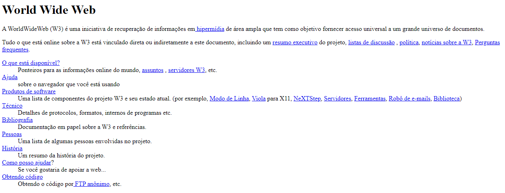
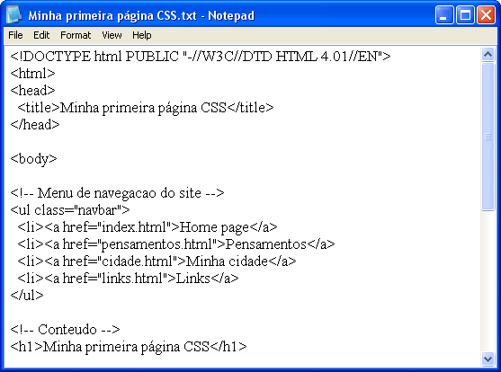

HTML (1991)
HTML (HyperText Markup Language), criado em 1991 pelo britânico cientista da computação, Tim Berners-Lee. É o bloco de construção mais básico da internet, ele define e estrutura o conteúdo do website. o "Hipertexto" refere-se aos links que concetam as páginas entre si, seja dentro de um único ou vários sites, ele usa marcação para anotar texto, imagem e outros tipos de conteudo para a exibição no website.

O codigo HTML foi criado para complementar o World Wide Web (WWW), e ser uma forma de interligar outros textos presentes na rede através de links, em 1992, o mesmo cientista, criou a World Wide Web, a rede nasceu na Organização Europeia para a investigação Nuclear, seu objetivo era facilitar o compartilhamento e atualização de informação entre os pesquisadores, que propôs a criação dos hipertextos para permitir que várias pessoas trabalhassem juntas acessando os mesmos documentos, essa foi a criação da conexão na internet atual.

Atividade desenvolvida como extensão no projeto
PACEX/Mundo Tech do curso de análise e Desenvolvimento de Sistemas
Unipar - Cascavel